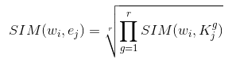

Preliminary Data Cleaning and Pre-Processing:
After parsing and dealing with encoding issues, we tokenize the tweets into set of words
using RegexpTokenizer which splits based on white spaces and punctuation. We perform
more
data cleaning such as stop word removal and lowercase conversion at a later stage since
the
accuracy of syntactic parsing and named entity recognition will highly depend on it. Related
notebook.
Affective Feature Extraction:
Next, we perform rigorous syntactic analysis by applying part of speech tagging using
nltk POS tagger in order to recognize N.A.V.A words (Nouns, Adjectives, Verbs and
Adverbs) which are best candidates for carrying emotional content and Dependency Parsing
using Stanford Dependency Parser to detect dependency relationships between words in the
sentence. We focus on three types of dependencies: negation modifier (“this is not
funny”), adjectival complement (“I feel depressed”) and adverbial modifier (“I struggled
happily”). The objective is to adjust the representation of words based on the presence
of stronger relationships for example, by detecting the negation dependency in the
sentence “I am not happy”, its affective representation will not be the same as the
sentence “I am happy” since the word happy is dependent on negation which will cancel
its happiness emotion to be neutral. The emotion of a word is normalized using the mean
of the dependent word “happy” and the word that it depends on “not”. After that, we
perform more refinement of the word features of the sentence using Named Entity
Recognition to remove the words that are proper nouns, places, monetary currencies and
so since those don’t contain any affective content. Related
notebook.
More Data Cleaning:
At this stage, we perform more term normalization by converting to lowercase and
lemmatization using WordNetLemmatizer to reduce word to its root form. We choose not to
use stemming since it cuts down words into meaningless words that are not contained in
the lexicon. We also remove customized version stopwords to which we add some commonly
used verbs that don’t express any emotion like “be”, “go”, “do”..
Computation of Emotional Vectors:
We compute word level emotional vectors where each word has a vector of 8 emotions + 2
polarities values based on semantic relatedness scores between the word and the set of
representative for the emotion/polarity category. Then we average by taking either
geometric
or arithmetic mean to get the tweet level emotional vectors. After that, we assign the
dominant emotion to be the index with the highest score among emotion indices and the
dominant polarity the index with the highest score among polarity indices if the highest
score exceeds a certain threshold. In case, the highest score doesn’t exceed the
threshold
or the tweet doesn’t contain any nava words, we assign neutral. Related
notebook.
Semantic Similarity Methodology:

Instead of solely relying on lexicon spotting to compare words in sentence with set of
representative words for each emotion category, we also extend it with an approach from
predictive distributional semantics based on Word Embedding. We use word2vec in order to
compute semantic similarity relatedness scores between each word and a set of
representative words of an emotion category by taking the geometric mean using the
formula where w_i is the word, K_j is the set of representative
words for particular emotion category e_j.
Related notebook.